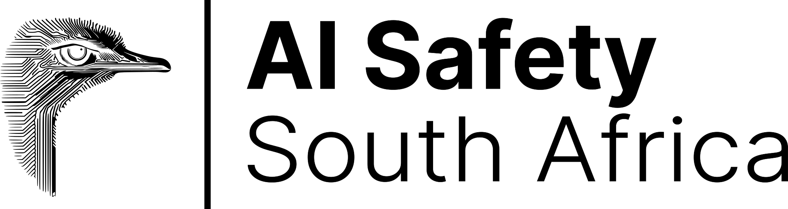

How we are stewarding a movement.

Our goal is to contribute to the AI safety effort by bringing the brightest minds in our network together, as we see phenomenal talent in Africa that is not being tapped. By creating a Schelling point on the continent, we can foster connection between local talent and the frontier of AI safety, facilitating collaboration with the global network. We believe that South Africa has the potential, if it plays its cards right, to join the ranks of AI middle powers and have a significant stake in steering the AI future for the better. We want to play a meaningful role in stewarding this future.
Programs
View all Programs →
Cooperative AI Research Fellowship
A 3-month in-person, all-expense-paid fellowship connecting researchers to senior mentors at Google DeepMind, Oxford, MIT, and more.

AI Safety Fundamentals
Cohort-based courses covering the core technical and governance ideas in AI safety, run regularly for newcomers to the field.

University Groups
We seed and support AI safety student groups at leading South African universities, including UCT and Wits.
Events
View all Events →Reading Groups
Weekly, hosted at our workspace — a low-key, high-signal venue for working through recent AI safety and governance papers together.

Workshops & Talks
Workshops at national AI conferences and talks featuring world-class AI safety researchers passing through Cape Town.
Hackathons
Project-focused sprints, often run alongside partners like Apart Research, giving participants a hands-on entry point into AI safety research.
Co-working Space
Alongside our programs and events, we run an open workspace in central Cape Town for professionals working in AI safety and d/acc related fields.
See the space →Partners, Collaborators, and Funders



Explore your path to impact.
You can make a contribution to AI safety through up-skilling, attending events, volunteering, co-working with our community, reading our newsletter, or supporting us financially.
Get involved →